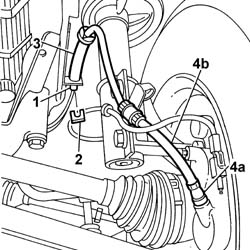

3340B10 HOSE TO L/H OR R/H FRONT BRAKES (ONE) R+R
- Path
- Procedures > 33 BRAKING SYSTEM > 3340 ANTI-LOCK BRAKE SYSTEM (ABS) > 3340B ABS SYSTEM PIPES > 3340B10 HOSE TO L/H OR R/H FRONT BRAKES (ONE) R+R
- Kind
- repair procedure (removal / refitting; the operation number is the code)
- Applies to
- all engines; all production periods
- Interactive page
- https://sloeber94.github.io/elrnDB-fDct/en/#/244001135
Applies to: all engines; all production periods
 Removing
Removing
 Refitting
Refitting- Position the vehicle on the lift.
Op. 7055B54 UNDER-ENGINE GUARD - R R
- Remove the protective cap from the bleed valve on one of the front brake calipers.
- Connect the recovery device (pipe and reservoir) to the front brake caliper bleed valve.
- Operate the brake pedal until the brake/clutch reservoir is drained.
1. Undo the connector between the rigid pipe and the flexible pipe at the front brakes.
2. Release the front flexible brake pipe retaining spring.
3. Release the front brake flexible pipe from the housing for the support on the bodyshell.
- Cut the bands securing the electrical wiring.
4. Disconnect the flexible pipe to the front brakes from the brake caliper (4a) and remove the flexible pipe to the front brakes (4b).

Applies to: all engines; all production periods
Refitting
Removing- Check that the the flexible pipe to the front brakes is not damaged.
- Tighten the flexible pipe to the front brakes to the brake caliper.
 | Value - daNm | Fastening | Component | Ø |
|---|---|---|---|---|
. | 1.2 -2.2 daNm | Nut | BRAKING SYSTEM PIPE CONNECTORS | M10x1 |
- Connect the band to the support.
- Fit the flexible pipe to the front brakes in the housing on the support.
- Fit the retaining spring on the flexible pipe to the front brakes.
- Tighten the connector for the flexible pipe to the rigid pipe from the hydraulic control unit to the front brake.
| Value - daNm | Fastening | Component | Ø |
|---|---|---|---|---|
. | 1.2 -2.2 daNm | Nut | BRAKING SYSTEM PIPE CONNECTORS | M10x1 |
- Position the electrical wiring for the A.B.S. sensor and secure it using the bands.
- Fit the protective cap for the bleed valve on one of the front brake calipers.
Op. 0010T65 HYDRAULIC BRAKE SYSTEM BLEED AIR
Op. 7055B54 UNDER-ENGINE GUARD - R R
- Remove the vehicle from the lift.
- Test the operation of the braking system.